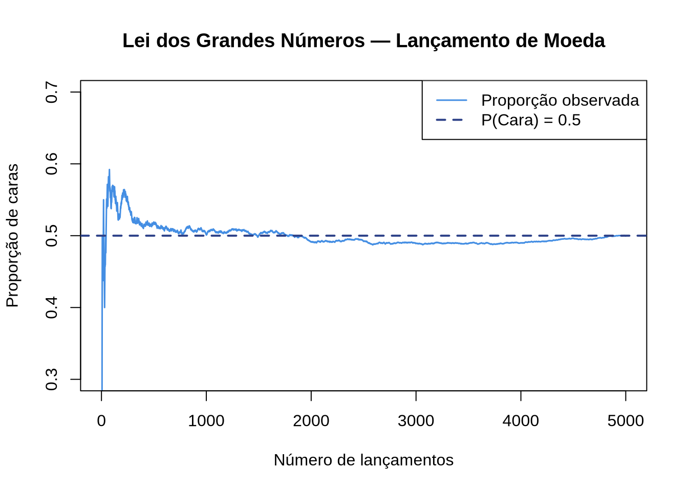
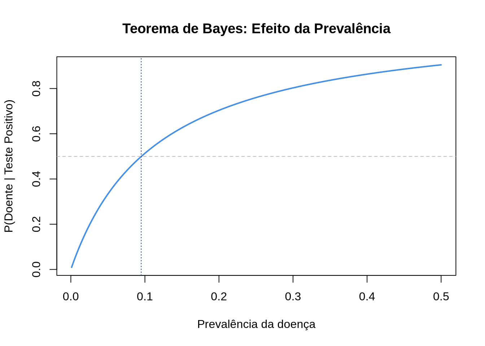
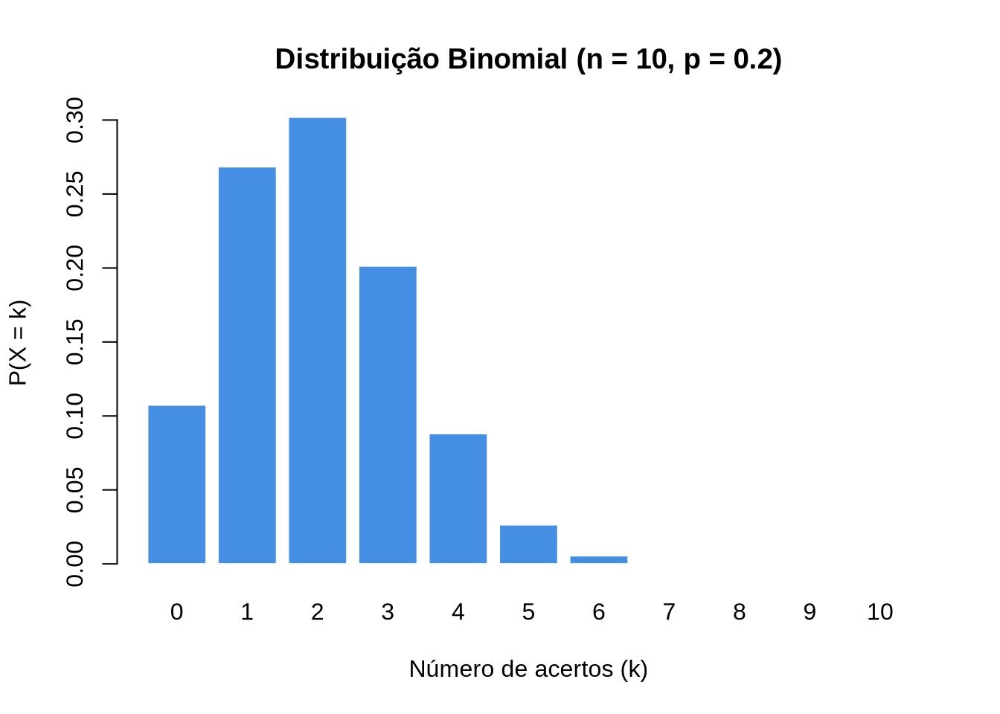
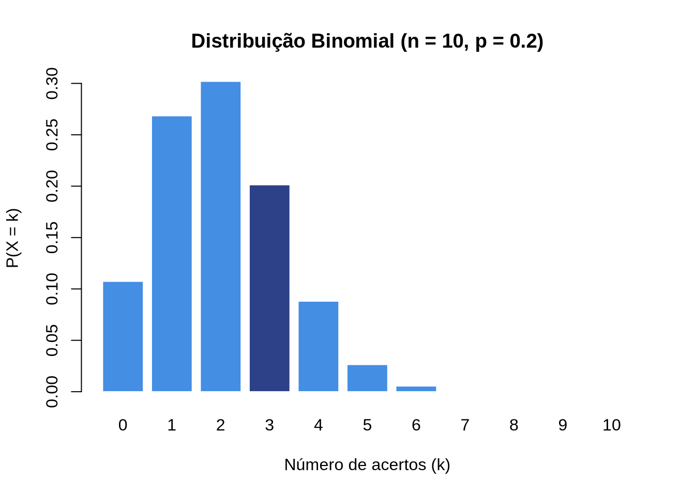
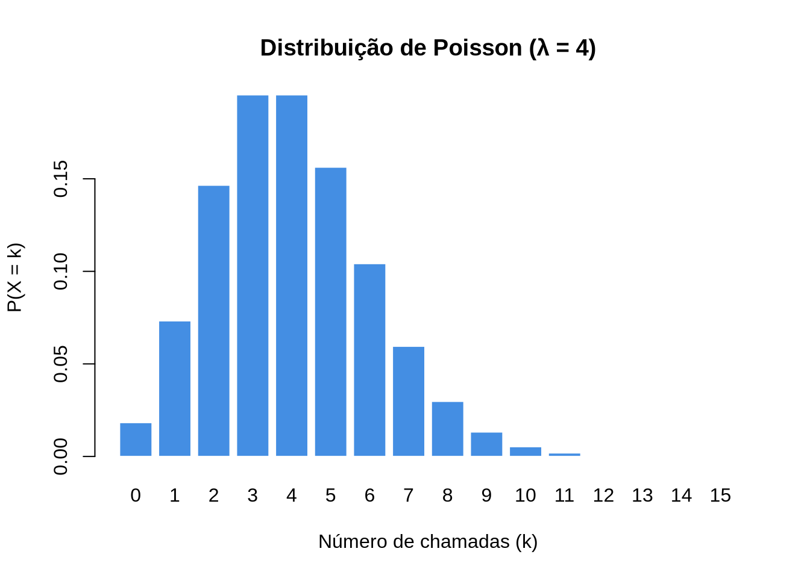
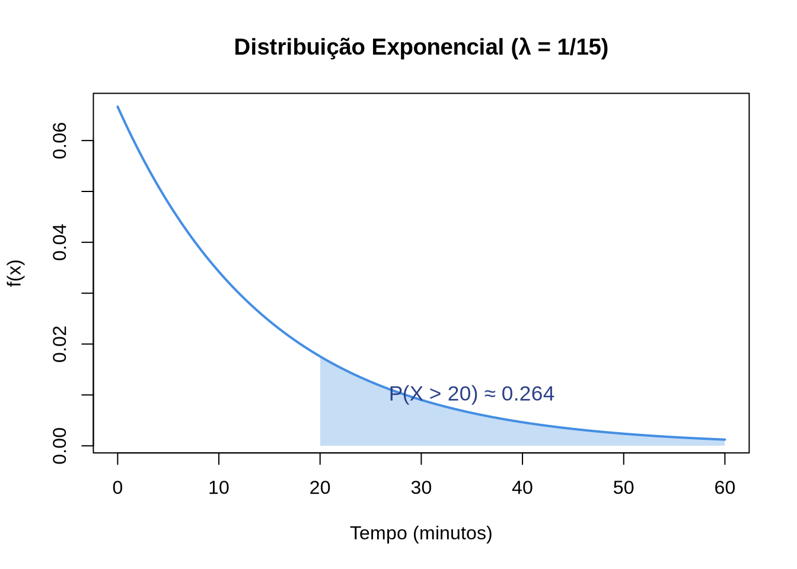
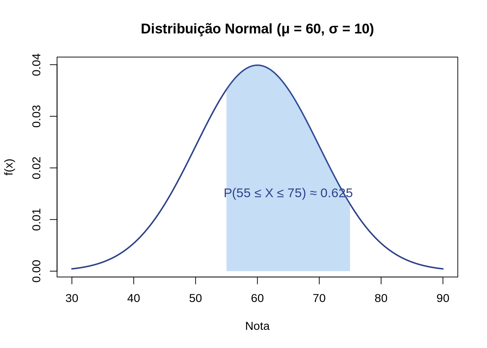
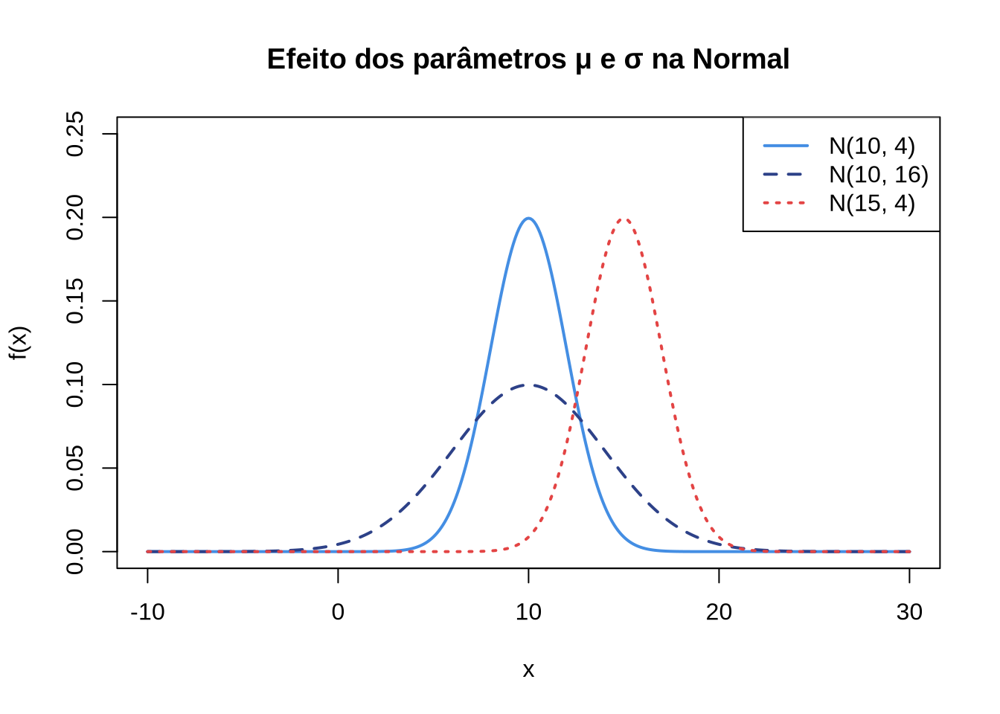

[1] 56[1] 120[1] 720A probabilidade é um ramo da matemática que estuda a incerteza e a aleatoriedade. Ela fornece ferramentas para quantificar a chance de ocorrência de eventos em situações onde o resultado não é previsível com certeza. Desde previsões do tempo até decisões financeiras, a probabilidade está presente em diversos aspectos da vida cotidiana e é fundamental em áreas como estatística, ciência de dados, física, engenharia, economia e jogos.
Neste capítulo, construiremos gradualmente a teoria da probabilidade: partiremos de conceitos básicos como experimentos aleatórios e espaços amostrais, passaremos pela definição formal de probabilidade e suas propriedades, até chegarmos a variáveis aleatórias e distribuições de probabilidade — ferramentas que serão essenciais para a inferência estatística no @cap-inferencia.
Antes de definir formalmente a probabilidade, precisamos estabelecer a linguagem e os conceitos que serão utilizados ao longo de todo o capítulo.
Um experimento aleatório é qualquer processo que pode ser repetido sob as mesmas condições, mas cujo resultado não pode ser previsto com certeza antes de sua realização.
Exemplos de experimentos aleatórios:
Note que, embora não possamos prever o resultado individual, quando repetimos o experimento muitas vezes, padrões regulares emergem — e é exatamente isso que a teoria da probabilidade busca descrever.
O espaço amostral (\(\Omega\)) de um experimento aleatório é o conjunto de todos os resultados possíveis desse experimento.
Exemplos:
Observe que no caso de duas moedas, o espaço amostral possui \(2 \times 2 = 4\) elementos. Essa ideia de multiplicar as possibilidades será formalizada na Section 2.2.
Um evento é qualquer subconjunto do espaço amostral. Dizemos que o evento ocorre quando o resultado do experimento pertence a esse subconjunto.
Exemplos para o lançamento de um dado (\(\Omega = \{1,2,3,4,5,6\}\)):
Operações com eventos:
| Operação | Notação | Significado |
|---|---|---|
| União | \(A \cup B\) | Ocorre \(A\) ou \(B\) (ou ambos) |
| Interseção | \(A \cap B\) | Ocorre \(A\) e \(B\) simultaneamente |
| Complementar | \(A^c\) | \(A\) não ocorre |
| Diferença | \(A - B\) | Ocorre \(A\) mas não \(B\) |
No exemplo acima: \(A \cup B = \{2, 4, 5, 6\}\) e \(A \cap B = \{6\}\).
Exercício 2.1 ⭐
No lançamento de dois dados, determine:
Exercício 2.2 ⭐⭐
Uma urna contém 3 bolas vermelhas numeradas de 1 a 3 e 2 bolas azuis numeradas de 1 a 2. Uma bola é retirada ao acaso.
A análise combinatória nos fornece técnicas para contar o número de elementos em espaços amostrais e eventos. Embora uma discussão exaustiva esteja fora do escopo desta disciplina, uma compreensão intuitiva dos principais conceitos é essencial para resolver problemas de probabilidade.
Se um experimento consiste em \(k\) etapas, onde a etapa 1 pode ser realizada de \(n_1\) maneiras, a etapa 2 de \(n_2\) maneiras, …, e a etapa \(k\) de \(n_k\) maneiras, então o número total de maneiras de realizar o experimento é:
\[ n_1 \times n_2 \times \cdots \times n_k \]
Exemplo: Uma lanchonete oferece 3 tipos de pão, 4 tipos de recheio e 2 tipos de bebida. Quantos lanches diferentes (pão + recheio + bebida) podem ser montados?
\[ 3 \times 4 \times 2 = 24 \text{ lanches diferentes} \]
O arranjo de \(n\) elementos tomados \(p\) a \(p\) conta o número de formas de escolher \(p\) elementos de um conjunto de \(n\), importando a ordem.
\[ A_{n,p} = \frac{n!}{(n-p)!} \]
Exemplo: De quantas maneiras podemos escolher o 1º, 2º e 3º lugar em uma corrida com 10 competidores?
\[ A_{10,3} = \frac{10!}{7!} = 10 \times 9 \times 8 = 720 \]
A permutação é um caso particular do arranjo em que \(p = n\), ou seja, ordenamos todos os \(n\) elementos.
\[ P_n = n! \]
Exemplo: De quantas maneiras 5 pessoas podem se sentar em 5 cadeiras numeradas?
\[ P_5 = 5! = 120 \]
A combinação de \(n\) elementos tomados \(p\) a \(p\) conta o número de formas de escolher \(p\) elementos de um conjunto de \(n\), sem importar a ordem.
\[ \binom{n}{p} = C_{n,p} = \frac{n!}{p!(n-p)!} \]
Exemplo: De quantas formas podemos formar uma comissão de 3 alunos a partir de um grupo de 8?
\[ \binom{8}{3} = \frac{8!}{3! \cdot 5!} = \frac{8 \times 7 \times 6}{3 \times 2 \times 1} = 56 \]
Podemos calcular isso em R:
[1] 56[1] 120[1] 720Exercício 2.3 ⭐
Uma sala tem 20 alunos. De quantas formas podemos:
Exercício 2.4 ⭐⭐
Um baralho padrão tem 52 cartas. Qual a probabilidade de, ao sortear 5 cartas ao acaso, obter exatamente 3 cartas de copas?
Dica: use combinações para contar os casos favoráveis e o total.
Quando o espaço amostral é finito e todos os resultados são igualmente prováveis, a probabilidade de um evento \(A\) é:
\[ P(A) = \frac{n(A)}{n(\Omega)} \]
Onde:
Exemplo: Qual a probabilidade de obter um número par no lançamento de um dado?
\[ P(A) = \frac{3}{6} = \frac{1}{2} = 0{,}5 \]
A probabilidade pode ser interpretada como o limite da frequência relativa quando o número de repetições do experimento tende ao infinito:
\[ P(A) = \lim_{n \to \infty} \frac{n_A}{n} \]
onde \(n_A\) é o número de vezes que o evento \(A\) ocorreu em \(n\) repetições do experimento.
Podemos visualizar isso com uma simulação da Lei dos Grandes Números:
# Simulação: Lei dos Grandes Números para lançamento de moeda
set.seed(42)
n <- 5000
lancamentos <- sample(c(0, 1), size = n, replace = TRUE) # 1 = cara
# Proporção acumulada de caras
proporcao <- cumsum(lancamentos) / (1:n)
plot(1:n, proporcao, type = "l", col = "#448EE3", lwd = 1.5,
xlab = "Número de lançamentos", ylab = "Proporção de caras",
main = "Lei dos Grandes Números — Lançamento de Moeda",
ylim = c(0.3, 0.7))
abline(h = 0.5, col = "#2D4188", lty = 2, lwd = 2)
legend("topright", legend = c("Proporção observada", "P(Cara) = 0.5"),
col = c("#448EE3", "#2D4188"), lty = c(1, 2), lwd = c(1.5, 2))
A simulação mostra que, à medida que o número de lançamentos cresce, a proporção de caras se estabiliza em torno de 0,5 — exatamente a probabilidade teórica.
Exercício 2.5 ⭐
Calcule a probabilidade dos seguintes eventos no lançamento de dois dados:
Exercício 2.6 ⭐⭐
Modifique o código da Lei dos Grandes Números para simular o lançamento de um dado e estimar a probabilidade de sair o número 6. Use n = 10000 lançamentos e compare o resultado com a probabilidade teórica \(P(6) = 1/6\).
A definição clássica de probabilidade, embora intuitiva, não é suficiente para todos os casos (por exemplo, espaços amostrais infinitos ou resultados não equiprováveis). Em 1933, Andrey Kolmogorov propôs uma definição axiomática que fundamenta toda a teoria moderna de probabilidade.
Uma função \(P\) que atribui a cada evento \(A\) um número real \(P(A)\) é uma probabilidade se satisfaz os três axiomas:
Axioma 1 (Não-negatividade): \[ P(A) \geq 0, \quad \text{para todo evento } A \]
Axioma 2 (Normalização): \[ P(\Omega) = 1 \]
Axioma 3 (Aditividade): Se \(A_1, A_2, A_3, \ldots\) são eventos mutuamente exclusivos (isto é, \(A_i \cap A_j = \emptyset\) para \(i \neq j\)), então:
\[ P\left(\bigcup_{i=1}^{\infty} A_i\right) = \sum_{i=1}^{\infty} P(A_i) \]
Esses três axiomas, aparentemente simples, são suficientes para deduzir todas as propriedades da probabilidade que utilizaremos.
Consequência imediata: Para dois eventos mutuamente exclusivos \(A\) e \(B\) (\(A \cap B = \emptyset\)):
\[ P(A \cup B) = P(A) + P(B) \]
Exemplo: No lançamento de um dado justo, os eventos \(A = \{1\}\) e \(B = \{2\}\) são mutuamente exclusivos. Portanto:
\[ P(A \cup B) = P(\{1\}) + P(\{2\}) = \frac{1}{6} + \frac{1}{6} = \frac{2}{6} = \frac{1}{3} \]
Exercício 2.7 ⭐
Usando apenas os axiomas de Kolmogorov, mostre que \(P(\emptyset) = 0\).
Dica: considere que \(\Omega = \Omega \cup \emptyset\) e que \(\Omega \cap \emptyset = \emptyset\).
Exercício 2.8 ⭐⭐
Usando os axiomas, mostre que para qualquer evento \(A\): \(0 \leq P(A) \leq 1\).
Dica: note que \(\Omega = A \cup A^c\) e que \(A \cap A^c = \emptyset\).
A partir dos axiomas de Kolmogorov, derivamos propriedades fundamentais que facilitam o cálculo de probabilidades em diversas situações.
Para qualquer evento \(A\):
\[ P(A^c) = 1 - P(A) \]
Demonstração: Como \(A\) e \(A^c\) são mutuamente exclusivos e \(A \cup A^c = \Omega\), pelo Axioma 3:
\[ P(\Omega) = P(A) + P(A^c) \implies 1 = P(A) + P(A^c) \implies P(A^c) = 1 - P(A) \]
Essa propriedade é extremamente útil: muitas vezes é mais fácil calcular a probabilidade de o evento não ocorrer.
Exemplo: Qual a probabilidade de obter pelo menos uma cara em 3 lançamentos de moeda?
Calcular diretamente exigiria listar vários casos. Pelo complementar:
\[ P(\text{pelo menos 1 cara}) = 1 - P(\text{nenhuma cara}) = 1 - P(\text{3 coroas}) = 1 - \left(\frac{1}{2}\right)^3 = 1 - \frac{1}{8} = \frac{7}{8} \]
Para quaisquer dois eventos \(A\) e \(B\):
\[ P(A \cup B) = P(A) + P(B) - P(A \cap B) \]
O termo \(-P(A \cap B)\) corrige a dupla contagem dos resultados que pertencem a ambos os eventos.
Exemplo: Em uma turma de 30 alunos, 18 gostam de matemática (\(M\)) e 15 gostam de português (\(P\)). Sabendo que 8 gostam de ambas, qual a probabilidade de um aluno escolhido ao acaso gostar de matemática ou português?
\[ P(M \cup P) = P(M) + P(P) - P(M \cap P) = \frac{18}{30} + \frac{15}{30} - \frac{8}{30} = \frac{25}{30} = \frac{5}{6} \approx 0{,}833 \]
Para três eventos \(A\), \(B\) e \(C\):
\[ P(A \cup B \cup C) = P(A) + P(B) + P(C) - P(A \cap B) - P(A \cap C) - P(B \cap C) + P(A \cap B \cap C) \]
Exercício 2.9 ⭐
Em um baralho de 52 cartas, sorteia-se uma carta ao acaso. Calcule a probabilidade de a carta ser de copas ou ser uma figura (valete, dama ou rei).
Exercício 2.10 ⭐⭐
Uma pesquisa revelou que, entre 200 pessoas, 120 leem o jornal A, 90 leem o jornal B e 50 leem ambos. Determine:
Em muitas situações, a informação de que um evento já ocorreu altera a probabilidade de outro evento. A probabilidade condicional formaliza essa ideia.
A probabilidade condicional de \(A\) dado que \(B\) ocorreu é:
\[ P(A \mid B) = \frac{P(A \cap B)}{P(B)}, \quad \text{com } P(B) > 0 \]
Intuitivamente, quando sabemos que \(B\) ocorreu, o espaço amostral se “reduz” a \(B\), e queremos saber qual a fração de \(B\) que também pertence a \(A\).
Exemplo: No lançamento de um dado justo, qual a probabilidade de o resultado ser 6 dado que o número é par?
Da definição de probabilidade condicional, obtemos a regra do produto (ou regra da multiplicação):
\[ P(A \cap B) = P(A \mid B) \cdot P(B) = P(B \mid A) \cdot P(A) \]
Exemplo: Uma urna contém 5 bolas vermelhas e 3 azuis. Retiramos 2 bolas sem reposição. Qual a probabilidade de ambas serem vermelhas?
\[ P(V_1 \cap V_2) = P(V_1) \cdot P(V_2 \mid V_1) = \frac{5}{8} \times \frac{4}{7} = \frac{20}{56} = \frac{5}{14} \approx 0{,}357 \]
Se \(B_1, B_2, \ldots, B_k\) formam uma partição do espaço amostral (são mutuamente exclusivos e \(B_1 \cup \cdots \cup B_k = \Omega\)), então para qualquer evento \(A\):
\[ P(A) = \sum_{i=1}^{k} P(A \mid B_i) \cdot P(B_i) \]
Exemplo: Uma fábrica tem 3 máquinas. A máquina I produz 40% das peças, a máquina II produz 35% e a máquina III produz 25%. As taxas de defeito são 2%, 3% e 5%, respectivamente. Qual a probabilidade de uma peça escolhida ao acaso ser defeituosa?
\[ P(D) = P(D \mid M_I) P(M_I) + P(D \mid M_{II}) P(M_{II}) + P(D \mid M_{III}) P(M_{III}) \] \[ P(D) = 0{,}02 \times 0{,}40 + 0{,}03 \times 0{,}35 + 0{,}05 \times 0{,}25 = 0{,}008 + 0{,}0105 + 0{,}0125 = 0{,}031 \]
Portanto, 3,1% das peças produzidas são defeituosas.
O Teorema de Bayes permite “inverter” probabilidades condicionais: conhecendo \(P(B \mid A)\), podemos calcular \(P(A \mid B)\).
Se \(B_1, B_2, \ldots, B_k\) formam uma partição de \(\Omega\), então:
\[ P(B_j \mid A) = \frac{P(A \mid B_j) \cdot P(B_j)}{\sum_{i=1}^{k} P(A \mid B_i) \cdot P(B_i)} \]
Exemplo clássico — Teste diagnóstico:
Um teste para uma doença tem sensibilidade de 95% (detecta corretamente 95% dos doentes) e especificidade de 90% (identifica corretamente 90% dos saudáveis). A prevalência da doença na população é de 1%. Se uma pessoa testa positivo, qual a probabilidade de realmente ter a doença?
Definindo: \(D\) = ter a doença, \(T^+\) = teste positivo.
Pelo Teorema de Bayes:
\[ P(D \mid T^+) = \frac{P(T^+ \mid D) \cdot P(D)}{P(T^+ \mid D) \cdot P(D) + P(T^+ \mid D^c) \cdot P(D^c)} \] \[ P(D \mid T^+) = \frac{0{,}95 \times 0{,}01}{0{,}95 \times 0{,}01 + 0{,}10 \times 0{,}99} = \frac{0{,}0095}{0{,}0095 + 0{,}099} = \frac{0{,}0095}{0{,}1085} \approx 0{,}0876 \]
Resultado surpreendente: mesmo com um teste positivo, a probabilidade de a pessoa estar doente é de apenas 8,76%. Isso ocorre porque a doença é rara (prevalência de 1%) e os falsos positivos são mais numerosos que os verdadeiros positivos em termos absolutos.
# Teorema de Bayes — Teste diagnóstico
sensibilidade <- 0.95
especificidade <- 0.90
prevalencia <- 0.01
# P(T+ | D) * P(D)
numerador <- sensibilidade * prevalencia
# P(T+)
denominador <- sensibilidade * prevalencia + (1 - especificidade) * (1 - prevalencia)
# P(D | T+)
p_doente_dado_positivo <- numerador / denominador
cat("P(Doente | Teste Positivo) =", round(p_doente_dado_positivo, 4), "\n")P(Doente | Teste Positivo) = 0.0876 # Variando a prevalência
prevalencias <- seq(0.001, 0.5, by = 0.001)
p_posterior <- (sensibilidade * prevalencias) /
(sensibilidade * prevalencias + (1 - especificidade) * (1 - prevalencias))
plot(prevalencias, p_posterior, type = "l", col = "#448EE3", lwd = 2,
xlab = "Prevalência da doença", ylab = "P(Doente | Teste Positivo)",
main = "Teorema de Bayes: Efeito da Prevalência")
abline(h = 0.5, col = "gray", lty = 2)
abline(v = prevalencias[which.min(abs(p_posterior - 0.5))],
col = "#2D4188", lty = 3)
Exercício 2.11 ⭐⭐
Em uma urna há 4 bolas vermelhas e 6 azuis. Retira-se uma bola, anota-se a cor (sem reposição) e retira-se outra. Calcule:
Exercício 2.12 ⭐⭐⭐
Um filtro de e-mail classifica mensagens como spam ou não-spam. Sabe-se que:
Se um e-mail foi classificado como spam pelo filtro, qual a probabilidade de ele realmente ser spam?
Dois eventos \(A\) e \(B\) são independentes se e somente se:
\[ P(A \cap B) = P(A) \cdot P(B) \]
Equivalentemente, \(A\) e \(B\) são independentes se:
\[ P(A \mid B) = P(A) \quad \text{e} \quad P(B \mid A) = P(B) \]
Quando dois eventos são independentes, a ocorrência de um não altera a probabilidade do outro. Caso contrário, os eventos são dependentes.
Exemplo 1 — Eventos independentes:
No lançamento de uma moeda e um dado simultaneamente, seja \(A\) = “moeda dá cara” e \(B\) = “dado mostra 6”.
Exemplo 2 — Eventos dependentes:
Em uma urna com 3 bolas vermelhas e 2 azuis, retiramos 2 bolas sem reposição. Seja \(A\) = “primeira bola vermelha” e \(B\) = “segunda bola vermelha”.
Os eventos são dependentes porque a retirada sem reposição altera as proporções na urna.
Exemplo 3 — Extensão para \(n\) eventos:
Três eventos \(A\), \(B\) e \(C\) são mutuamente independentes se:
\[ P(A \cap B) = P(A)P(B), \quad P(A \cap C) = P(A)P(C), \quad P(B \cap C) = P(B)P(C) \] \[ \text{e} \quad P(A \cap B \cap C) = P(A)P(B)P(C) \]
Exercício 2.13 ⭐
Uma moeda justa é lançada 4 vezes. Qual a probabilidade de obter 4 caras consecutivas? Justifique usando independência.
Exercício 2.14 ⭐⭐
Um sistema de segurança possui 3 sensores independentes. Cada sensor tem probabilidade 0,9 de detectar uma intrusão. Qual a probabilidade de:
Até agora, trabalhamos com eventos como subconjuntos do espaço amostral. As variáveis aleatórias nos permitem associar valores numéricos aos resultados do experimento, facilitando enormemente a análise.
Uma variável aleatória \(X\) é uma função que associa a cada resultado do espaço amostral \(\Omega\) um número real:
\[ X: \Omega \to \mathbb{R} \]
Exemplo: No lançamento de duas moedas (\(\Omega = \{CC, CK, KC, KK\}\)), podemos definir \(X\) = “número de caras”. Então:
| Resultado | \(X\) |
|---|---|
| \(KK\) | 0 |
| \(CK\) | 1 |
| \(KC\) | 1 |
| \(CC\) | 2 |
Uma variável aleatória é discreta quando assume um número finito ou infinito contável de valores.
A função de probabilidade (ou função massa de probabilidade, PMF) de uma variável aleatória discreta \(X\) é:
\[ p(x) = P(X = x) \]
com as propriedades:
Exemplo (continuação): Para \(X\) = número de caras em 2 lançamentos:
\[ P(X = 0) = 1/4, \quad P(X = 1) = 2/4 = 1/2, \quad P(X = 2) = 1/4 \]
A função de distribuição acumulada (CDF) de \(X\) é:
\[ F(x) = P(X \leq x) = \sum_{x_i \leq x} p(x_i) \]
A esperança (ou valor esperado) de uma variável aleatória discreta \(X\) é:
\[ E(X) = \mu = \sum_x x \cdot p(x) \]
A esperança pode ser interpretada como a “média ponderada” dos valores de \(X\), onde os pesos são as probabilidades.
Exemplo: Para \(X\) = número de caras em 2 lançamentos:
\[ E(X) = 0 \times \frac{1}{4} + 1 \times \frac{1}{2} + 2 \times \frac{1}{4} = 0 + 0{,}5 + 0{,}5 = 1 \]
Propriedades da esperança:
A variância de \(X\) mede a dispersão em torno da esperança:
\[ \text{Var}(X) = \sigma^2 = E[(X - \mu)^2] = \sum_x (x - \mu)^2 \cdot p(x) \]
Forma alternativa (computacionalmente mais prática):
\[ \text{Var}(X) = E(X^2) - [E(X)]^2 \]
O desvio padrão é \(\sigma = \sqrt{\text{Var}(X)}\).
Exemplo: Para \(X\) = número de caras em 2 lançamentos com \(E(X) = 1\):
\[ E(X^2) = 0^2 \times \frac{1}{4} + 1^2 \times \frac{1}{2} + 2^2 \times \frac{1}{4} = 0 + 0{,}5 + 1 = 1{,}5 \] \[ \text{Var}(X) = 1{,}5 - 1^2 = 0{,}5 \]
Propriedades da variância:
Uma variável aleatória é contínua quando pode assumir qualquer valor em um intervalo da reta real.
Uma variável aleatória contínua \(X\) é descrita por sua função densidade de probabilidade (PDF) \(f(x)\), tal que:
Importante: Para variáveis contínuas, \(P(X = x) = 0\) para qualquer valor específico \(x\). A probabilidade só faz sentido para intervalos.
\[ E(X) = \int_{-\infty}^{\infty} x \cdot f(x) \, dx \] \[ \text{Var}(X) = \int_{-\infty}^{\infty} (x - \mu)^2 \cdot f(x) \, dx = E(X^2) - [E(X)]^2 \]
Exercício 2.15 ⭐
Um dado justo é lançado. Seja \(X\) o valor obtido. Calcule \(E(X)\) e \(\text{Var}(X)\).
Exercício 2.16 ⭐⭐
Uma variável aleatória discreta \(X\) tem a seguinte distribuição:
| \(x\) | 1 | 2 | 3 | 4 |
|---|---|---|---|---|
| \(P(X=x)\) | 0,1 | 0,3 | \(k\) | 0,2 |
As distribuições de probabilidade são modelos matemáticos que descrevem o comportamento de variáveis aleatórias em diversas situações. Conhecer essas distribuições nos permite resolver problemas práticos sem precisar enumerar todo o espaço amostral.
A distribuição binomial modela o número de “sucessos” em uma sequência de \(n\) ensaios independentes, cada um com probabilidade de sucesso \(p\).
Se \(X \sim \text{Binomial}(n, p)\), então:
\[ P(X = k) = \binom{n}{k} p^k (1-p)^{n-k}, \quad k = 0, 1, 2, \ldots, n \]
Parâmetros:
Esperança e variância:
\[ E(X) = np \qquad \text{Var}(X) = np(1-p) \]
Exemplo: Um exame de múltipla escolha tem 10 questões com 5 alternativas cada. Se um aluno responde todas ao acaso, qual a probabilidade de acertar exatamente 3 questões?
\[ P(X = 3) = \binom{10}{3} (0{,}2)^3 (0{,}8)^7 = 120 \times 0{,}008 \times 0{,}2097 \approx 0{,}2013 \]
[1] 0.2013266[1] 0.8791261

Exercício 2.17 ⭐
Uma moeda justa é lançada 8 vezes. Calcule:
A distribuição de Poisson modela o número de ocorrências de um evento em um intervalo fixo de tempo ou espaço, quando as ocorrências são independentes e a taxa média é constante.
Se \(X \sim \text{Poisson}(\lambda)\), então:
\[ P(X = k) = \frac{e^{-\lambda} \lambda^k}{k!}, \quad k = 0, 1, 2, \ldots \]
Parâmetro:
Esperança e variância:
\[ E(X) = \lambda \qquad \text{Var}(X) = \lambda \]
Note que na distribuição de Poisson, a média e a variância são iguais — essa é uma propriedade característica.
Exemplo: Uma central de atendimento recebe, em média, 4 chamadas por hora. Qual a probabilidade de receber exatamente 6 chamadas em uma hora?
\[ P(X = 6) = \frac{e^{-4} \cdot 4^6}{6!} = \frac{0{,}0183 \times 4096}{720} \approx 0{,}1042 \]
[1] 0.1041956
Exercício 2.18 ⭐⭐
Uma loja recebe, em média, 3 reclamações por dia. Assumindo que o número de reclamações segue uma distribuição de Poisson, calcule:
Dica para o item c): em 2 dias, \(\lambda = 6\).
A distribuição exponencial modela o tempo entre ocorrências de um evento em um processo de Poisson.
Se \(X \sim \text{Exp}(\lambda)\), sua função densidade é:
\[ f(x) = \lambda e^{-\lambda x}, \quad x \geq 0 \]
Parâmetro:
Esperança e variância:
\[ E(X) = \frac{1}{\lambda} \qquad \text{Var}(X) = \frac{1}{\lambda^2} \]
CDF:
\[ F(x) = P(X \leq x) = 1 - e^{-\lambda x}, \quad x \geq 0 \]
Uma propriedade importante da distribuição exponencial é a falta de memória: \(P(X > s + t \mid X > s) = P(X > t)\).
Exemplo: O tempo médio entre chamadas em uma central é de 15 minutos (\(\lambda = 1/15\) chamadas/minuto). Qual a probabilidade de esperar mais de 20 minutos pela próxima chamada?
\[ P(X > 20) = 1 - F(20) = e^{-20/15} = e^{-4/3} \approx 0{,}2636 \]
[1] 0.2635971[1] 0.2635971# Gráfico da PDF
x <- seq(0, 60, by = 0.1)
fx <- dexp(x, rate = lambda)
plot(x, fx, type = "l", col = "#448EE3", lwd = 2,
xlab = "Tempo (minutos)", ylab = "f(x)",
main = paste0("Distribuição Exponencial (λ = 1/15)"))
# Sombrear P(X > 20)
x_sombra <- seq(20, 60, by = 0.1)
y_sombra <- dexp(x_sombra, rate = lambda)
polygon(c(20, x_sombra, 60), c(0, y_sombra, 0),
col = rgb(0.27, 0.56, 0.89, alpha = 0.3), border = NA)
text(35, 0.01, "P(X > 20) ≈ 0.264", col = "#2D4188", cex = 1.1)
Exercício 2.19 ⭐
O tempo de vida útil de um componente eletrônico segue uma distribuição exponencial com média de 500 horas. Calcule:
A distribuição normal (ou gaussiana) é a mais importante da estatística. Ela aparece naturalmente em diversos fenômenos e é central para a inferência estatística, conforme veremos no @cap-inferencia.
Se \(X \sim N(\mu, \sigma^2)\), sua função densidade é:
\[ f(x) = \frac{1}{\sigma\sqrt{2\pi}} \exp\left(-\frac{(x - \mu)^2}{2\sigma^2}\right), \quad -\infty < x < \infty \]
Parâmetros:
Esperança e variância:
\[ E(X) = \mu \qquad \text{Var}(X) = \sigma^2 \]
Propriedades da distribuição normal:
A normal padrão é a distribuição normal com \(\mu = 0\) e \(\sigma = 1\), denotada \(Z \sim N(0, 1)\).
Qualquer variável normal pode ser transformada (padronizada) em uma normal padrão:
\[ Z = \frac{X - \mu}{\sigma} \]
Isso permite usar tabelas ou funções computacionais da normal padrão para calcular probabilidades de qualquer distribuição normal.
Exemplo: As notas de um vestibular seguem uma distribuição normal com \(\mu = 60\) e \(\sigma = 10\). Qual a probabilidade de um candidato obter nota entre 55 e 75?
\[ P(55 \leq X \leq 75) = P\left(\frac{55 - 60}{10} \leq Z \leq \frac{75 - 60}{10}\right) = P(-0{,}5 \leq Z \leq 1{,}5) \] \[ = \Phi(1{,}5) - \Phi(-0{,}5) = 0{,}9332 - 0{,}3085 = 0{,}6247 \]
[1] 0.6246553# Funções úteis da Normal em R:
# dnorm(x, mean, sd) — densidade (PDF)
# pnorm(q, mean, sd) — probabilidade acumulada P(X <= q)
# qnorm(p, mean, sd) — quantil (inverso da CDF)
# rnorm(n, mean, sd) — gerar amostras aleatórias
# Exemplo: qual a nota mínima para estar entre os 10% melhores?
qnorm(0.90, mean = mu, sd = sigma)[1] 72.81552# Gráfico da Normal com área sombreada
x <- seq(30, 90, by = 0.1)
fx <- dnorm(x, mean = mu, sd = sigma)
plot(x, fx, type = "l", col = "#2D4188", lwd = 2,
xlab = "Nota", ylab = "f(x)",
main = "Distribuição Normal (μ = 60, σ = 10)")
# Sombrear P(55 <= X <= 75)
x_sombra <- seq(55, 75, by = 0.1)
y_sombra <- dnorm(x_sombra, mean = mu, sd = sigma)
polygon(c(55, x_sombra, 75), c(0, y_sombra, 0),
col = rgb(0.27, 0.56, 0.89, alpha = 0.3), border = NA)
text(65, 0.015, "P(55 ≤ X ≤ 75) ≈ 0.625", col = "#2D4188", cex = 1.1)
P(μ ± 1σ) = 0.6826895 P(μ ± 2σ) = 0.9544997 P(μ ± 3σ) = 0.9973002 # Comparação visual de distribuições normais com diferentes parâmetros
x <- seq(-10, 30, by = 0.1)
plot(x, dnorm(x, mean = 10, sd = 2), type = "l", col = "#448EE3", lwd = 2,
xlab = "x", ylab = "f(x)",
main = "Efeito dos parâmetros μ e σ na Normal",
ylim = c(0, 0.25))
lines(x, dnorm(x, mean = 10, sd = 4), col = "#2D4188", lwd = 2, lty = 2)
lines(x, dnorm(x, mean = 15, sd = 2), col = "#E34444", lwd = 2, lty = 3)
legend("topright",
legend = c("N(10, 4)", "N(10, 16)", "N(15, 4)"),
col = c("#448EE3", "#2D4188", "#E34444"),
lty = c(1, 2, 3), lwd = 2)
Exercício 2.20 ⭐⭐
Os pesos de recém-nascidos em um hospital seguem distribuição normal com \(\mu = 3{,}2\) kg e \(\sigma = 0{,}5\) kg.
qnorm em R.)Exercício 2.21 ⭐⭐⭐
O tempo de conclusão de uma prova segue distribuição normal com \(\mu = 90\) minutos e \(\sigma = 15\) minutos. O professor estipula 120 minutos para a prova.
Dica para c): use a função qnorm.
Neste capítulo, percorremos os fundamentos da teoria da probabilidade:
| Conceito | Descrição |
|---|---|
| Experimento aleatório | Processo com resultado incerto |
| Espaço amostral (\(\Omega\)) | Conjunto de todos os resultados possíveis |
| Evento | Subconjunto de \(\Omega\) |
| Probabilidade clássica | \(P(A) = n(A)/n(\Omega)\) |
| Axiomas de Kolmogorov | Base formal da probabilidade |
| Complementar | \(P(A^c) = 1 - P(A)\) |
| Inclusão-exclusão | \(P(A \cup B) = P(A) + P(B) - P(A \cap B)\) |
| Prob. condicional | \(P(A \mid B) = P(A \cap B) / P(B)\) |
| Teorema de Bayes | Inversão de probabilidades condicionais |
| Independência | \(P(A \cap B) = P(A) \cdot P(B)\) |
| Variável aleatória | Função de \(\Omega\) em \(\mathbb{R}\) |
| Esperança | \(E(X)\) — média ponderada pelas probabilidades |
| Variância | \(\text{Var}(X)\) — dispersão em torno da média |
| Binomial | Número de sucessos em \(n\) ensaios: \(\text{Bin}(n, p)\) |
| Poisson | Contagem de eventos em intervalo fixo: \(\text{Poi}(\lambda)\) |
| Exponencial | Tempo entre eventos: \(\text{Exp}(\lambda)\) |
| Normal | Distribuição simétrica em sino: \(N(\mu, \sigma^2)\) |
No próximo capítulo, utilizaremos essas distribuições — em especial a normal — como base para a inferência estatística: a arte de tirar conclusões sobre populações a partir de amostras.